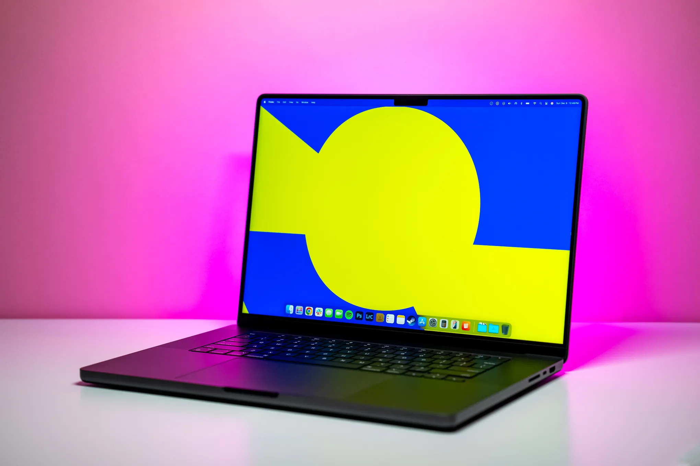

Apple Macbook M4 Pro 16
Краткое описание
MacBook Pro удивляет своей производительностью и мощностью вместе с чипом М4 Pro. Созданные по 3-нанометровой технологии второго поколения и оснащенные обновленным нейронным процессором, ноутбуки подойдут для выполнения более сложных задач. Минимальное количество ядер центрального процессора увеличилось с 8 до 10 единиц. Теперь компьютер еще быстрее справляется с обработкой данных.
Характеристики
Подробное описание
Ноутбук Apple MacBook Pro 16 2024 (M4 Pro 14-Core, GPU 20-Core, 24GB, 512GB) — это идеальный выбор для всех, кому нужна мощь и комфорт. Чип M4 Pro нового поколения c 14 ядрами ЦП и 20 ядрами графического процессора обеспечивает беспрецедентную производительность, позволяя ноутбуку справляться с самыми сложными задачами. Благодаря высокоскоростной унифицированной памяти и передовым ускорителям машинного обучения этот ноутбук подходит для специалистов из разных областей, от дизайнеров до аналитиков. 16-дюймовый дисплей Liquid Retina XDR с HDR поддерживает яркость до 1600 нит и гарантирует четкие, яркие цвета, независимо от освещения. Макбук Про 16 2024 оснащён встроенной системой Apple Intelligence, которая защищает ваши данные и повышает производительность. Эта система обрабатывает информацию на уровне устройства, что позволяет избежать утечек и поддерживать высокий уровень безопасности. Система динамиков с пространственным звуком и Dolby Atmos создает невероятное ощущение присутствия при воспроизведении аудио, а камера 12 Мп и микрофоны делают видеосвязь удобной и качественной.
Все права защищены © 2026